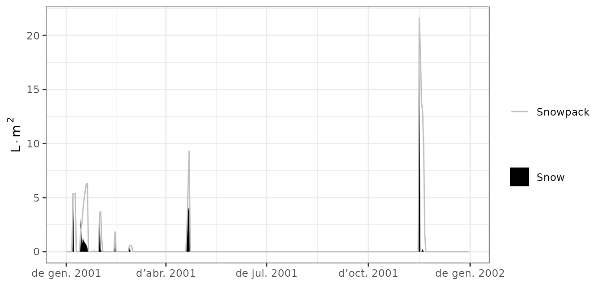

Basic water balance
Miquel De Caceres
2023-08-28
Source:vignettes/runmodels/BasicWaterBalance.Rmd
BasicWaterBalance.RmdAbout this vignette
The present document describes how to run the soil plant water
balance model described in De Cáceres et al. (2015) using package
medfate. The document illustrates how to prepare the
inputs, use the simulation functions and inspect the outputs. All the
details of the model design and formulation can be found at the medfatebook.
Because it introduces many basic features of simulations with package
medfate, this document should be read before addressing
advanced topics of water balance simulations or growth simulations.
Preparing model inputs
Model inputs are explained in greater detail in vignettes Understanding
model inputs and Preparing
model inputs. Here we only review the different steps required
to run function spwb().
Soil, vegetation, meteorology and species data
Soil information needs to be entered as a data frame
with soil layers in rows and physical attributes in columns. Soil
physical attributes can be initialized to default values, for a given
number of layers, using function defaultSoilParams():
spar = defaultSoilParams(4)The soil input for water balance simulation is actually a list of
class soil that is created using a function with the same
name:
examplesoil = soil(spar)As explained in the package overview, models included in
medfate were primarily designed to be ran on forest
inventory plots. Here we use the example object provided with
the package:
data(exampleforestMED)
exampleforestMED## $treeData
## Species N DBH Height Z50 Z95
## 1 Pinus halepensis 168 37.55 800 100 600
## 2 Quercus ilex 384 14.60 660 300 1000
##
## $shrubData
## Species Cover Height Z50 Z95
## 1 Quercus coccifera 3.75 80 200 1000
##
## $herbCover
## [1] 10
##
## $herbHeight
## [1] 20
##
## attr(,"class")
## [1] "forest" "list"Importantly, a data frame with daily weather for the period to be simulated is required. Here we use the default data frame included with the package:
## MinTemperature MaxTemperature Precipitation MinRelativeHumidity
## 2001-01-01 -0.5934215 6.287950 4.869109 65.15411
## 2001-01-02 -2.3662458 4.569737 2.498292 57.43761
## 2001-01-03 -3.8541036 2.661951 0.000000 58.77432
## 2001-01-04 -1.8744860 3.097705 5.796973 66.84256
## 2001-01-05 0.3288287 7.551532 1.884401 62.97656
## 2001-01-06 0.5461322 7.186784 13.359801 74.25754
## MaxRelativeHumidity Radiation WindSpeed
## 2001-01-01 100.00000 12.89251 2.000000
## 2001-01-02 94.71780 13.03079 7.662544
## 2001-01-03 94.66823 16.90722 2.000000
## 2001-01-04 95.80950 11.07275 2.000000
## 2001-01-05 100.00000 13.45205 7.581347
## 2001-01-06 100.00000 12.84841 6.570501Finally, simulations in medfate require a data frame
with species parameter values, which we load using defaults for
Catalonia (NE Spain):
data("SpParamsMED")Simulation control
Apart from data inputs, the behaviour of simulation models can be
controlled using a set of global parameters. The default
parameterization is obtained using function
defaultControl():
control = defaultControl("Granier")Some parameters deserve explanation here:
- Console output can be turned off by setting
verbose = FALSE. - The soil water retention curves can be switched between Saxton’s and
Van Genuchten’s using parameter
soilFunctions. - The complexity of the soil water balance calculations will be very
different if we set
transpirationMode = "Sperry"ortranspirationMode = "Cochard", instead oftranspirationMode = "Granier".
Water balance input object
A last object is needed before calling simulation functions, called
spwbInput. It consists in the compilation of aboveground
and belowground parameters and the specification of additional parameter
values for each plant cohort. This is done by calling function
spwbInput(), but if one has a forest object,
the object can be generated more directly using function
forest2spwbInput():
x = forest2spwbInput(exampleforestMED, examplesoil, SpParamsMED, control)Different parameter variables will be drawn depending on the value of
transpirationMode. For the basic water balance model
(transpirationMode = "Granier"), relatively few parameters
are needed. All the input information for forest data and species
parameter values can be inspected by accessing the different elements of
this object, whose names are.
names(x)## [1] "control" "soil" "canopy"
## [4] "herbLAI" "herbLAImax" "cohorts"
## [7] "above" "below" "belowLayers"
## [10] "paramsPhenology" "paramsAnatomy" "paramsInterception"
## [13] "paramsTranspiration" "paramsWaterStorage" "internalPhenology"
## [16] "internalWater" "internalFCCS"Note that (since ver 2.0) the water balance input
object contains an element soil with the soil input.
Finally, note that users can set cohort-specific parameters for soil water balance (instead of using species-level values) by modifying manually the parameter values in this object. Since some parameters may be coordinated by design, however, it is better to use specific package functions for this purpose.
Executing the soil water balance model
Water balance for a single day
Soil water balance simulations will normally span periods of several
months or years, but since the model operates at a daily temporal scale,
it is possible to perform soil water balance for one day only. This is
done using function spwb_day(). In the following code we
select day 100 from the meteorological input data and perform soil water
balance for that day only:
d <- 100
date <- rownames(examplemeteo)[d]
meteovec <- unlist(examplemeteo[d,])
sd1<-spwb_day(x, date, meteovec,
latitude = 41.82592, elevation = 100, slope= 0, aspect = 0)## Package 'meteoland' [ver. 2.1.0]Function spwb_day() is most useful when working with the
complex transpiration model. This is why so many meteorological
variables are required. The output of spwb_day() is a list
with five elements:
names(sd1)## [1] "cohorts" "topography" "weather" "WaterBalance" "Soil"
## [6] "Stand" "Plants"- cohorts: Table with the species code and species name of each cohort.
- WaterBalance: Contains the soil water balance flows (precipitation, infiltration, transpiration, …)
- Soil: Contains output values by soil layer (i.e. water evaporated from each soil layer, water transpired from each soil layer and the final soil water potential).
- Stand: A list with stand LAI (expanded and dead leaves), canopy water retention capacity and the proportion of light (SWR or PAR) reaching the ground.
- Plants: Contains output values by plant cohort (i.e. LAI values, transpiration, water potential, drought stress index, …).
sd1## $cohorts
## SP Name
## T1_148 148 Pinus halepensis
## T2_168 168 Quercus ilex
## S1_165 165 Quercus coccifera
##
## $topography
## elevation slope aspect
## 100 0 0
##
## $weather
## tday prec tmin tmax rhmin rhmax
## 6.2323731 0.0000000 0.3881289 10.0320962 42.0207334 82.3036989
## rad wind Catm Patm pet er
## 28.7201692 3.3228840 386.0000000 NA 5.0233468 0.1395374
##
## $WaterBalance
## PET Rain Snow
## 5.02334675 0.00000000 0.00000000
## NetRain Snowmelt Runon
## 0.00000000 0.00000000 0.00000000
## Infiltration Runoff DeepDrainage
## 0.00000000 0.00000000 0.00000000
## SoilEvaporation HerbTranspiration PlantExtraction
## 0.50000000 0.06272094 0.86051995
## Transpiration HydraulicRedistribution
## 0.86051995 0.00000000
##
## $Soil
## SoilEvaporation HydraulicInput HydraulicOutput PlantExtraction psi
## 1 4.999998e-01 0 0.52913290 0.52913290 -0.03591622
## 2 1.529512e-07 0 0.24598126 0.24598126 -0.03333132
## 3 9.643749e-23 0 0.05111626 0.05111626 -0.03310567
## 4 1.860038e-44 0 0.03428953 0.03428953 -0.03317741
##
## $Stand
## LAI LAIherb LAIlive LAIexpanded LAIdead Cm
## 1.7585845 0.1736369 1.5849476 1.5849476 0.0000000 1.3904846
## LgroundPAR LgroundSWR
## 40.0075402 50.7329667
##
## $Plants
## LAI LAIlive FPAR AbsorbedSWRFraction Extraction
## T1_148 0.84874773 0.84874773 92.18285 35.076344 0.52598856
## T2_168 0.70557382 0.70557382 72.36365 30.444383 0.30009637
## S1_165 0.03062604 0.03062604 44.32407 2.366131 0.03443501
## Transpiration GrossPhotosynthesis PlantPsi DDS StemRWC
## T1_148 0.52598856 3.5698943 -0.03426601 0.006138413 0.9998286
## T2_168 0.30009637 2.7101289 -0.03373636 0.010863975 0.9997444
## S1_165 0.03443501 0.2105587 -0.03400111 0.003210305 0.9983189
## LeafRWC LFMC StemPLC WaterBalance
## T1_148 0.9978900 125.88464 0.000000e+00 -6.937457e-05
## T2_168 0.9986503 93.07279 3.982099e-09 -9.843885e-06
## S1_165 0.9986819 96.38744 4.235835e-08 -2.250411e-06
##
## attr(,"class")
## [1] "spwb_day" "list"Water balance for multiple days
Most often, users will use function spwb() to run the
soil water balance model. This function requires the
spwbInput object and the meteorological data frame.
However, function spwb_day() by default modifies the state
variables of the input objects. In particular, the values of soil
moisture are now:
x$soil$W## [1] 0.9829825 0.9978913 0.9993252 0.9988683We simply reset state variables to their default values so that new simulations are not affected by the end state of the previous simulation:
resetInputs(x)
x$soil$W## [1] 1 1 1 1Now we are ready to call function spwb():
S = spwb(x, examplemeteo, latitude = 41.82592, elevation = 100)## Initial plant water content (mm): 7.0586
## Initial soil water content (mm): 286.862
## Initial snowpack content (mm): 0
## Performing daily simulations
##
## [Year 2001]:....................................
##
## Final plant water content (mm): 7.05628
## Final soil water content (mm): 269.841
## Final snowpack content (mm): 0
## Change in plant water content (mm): -0.00231802
## Plant water balance result (mm): -0.00231802
## Change in soil water content (mm): -17.0205
## Soil water balance result (mm): -17.0205
## Change in snowpack water content (mm): 0
## Snowpack water balance result (mm): -7.10543e-15
## Water balance components:
## Precipitation (mm) 513
## Rain (mm) 462 Snow (mm) 51
## Interception (mm) 93 Net rainfall (mm) 369
## Infiltration (mm) 409 Runoff (mm) 11 Deep drainage (mm) 142
## Soil evaporation (mm) 27 Herbaceous transpiration (mm) 18 Woody plant transpiration (mm) 239
## Plant extraction from soil (mm) 239 Plant water balance (mm) -0 Hydraulic redistribution (mm) 3Function spwb() returns an object of class with the same
name, actually a list:
class(S)## [1] "spwb" "list"If we inspect its elements, we realize that the output is arranged
differently than in spwb_day():
names(S)## [1] "latitude" "topography" "weather" "spwbInput" "spwbOutput"
## [6] "WaterBalance" "Soil" "Stand" "Plants"In particular, element spwbInput contains a copy of the
input parameters that were used to run the model:
names(S$spwbInput)## [1] "control" "soil" "canopy"
## [4] "herbLAI" "herbLAImax" "cohorts"
## [7] "above" "below" "belowLayers"
## [10] "paramsPhenology" "paramsAnatomy" "paramsInterception"
## [13] "paramsTranspiration" "paramsWaterStorage" "internalPhenology"
## [16] "internalWater" "internalFCCS"As before, WaterBalance contains water balance
components, but in this case in form of a data frame with days in
rows:
head(S$WaterBalance)## PET Precipitation Rain Snow NetRain Snowmelt
## 2001-01-01 1.3212770 4.869109 4.869109 0 3.3972486 0
## 2001-01-02 2.2185985 2.498292 2.498292 0 1.0591947 0
## 2001-01-03 1.8045176 0.000000 0.000000 0 0.0000000 0
## 2001-01-04 0.9200627 5.796973 5.796973 0 4.3355284 0
## 2001-01-05 2.2914449 1.884401 1.884401 0 0.7539027 0
## 2001-01-06 1.7255058 13.359801 13.359801 0 11.6190265 0
## Infiltration Runoff DeepDrainage Evapotranspiration Interception
## 2001-01-01 3.3972486 0 2.6948371 2.2147047 1.471860
## 2001-01-02 1.0591947 0 0.8081237 2.3468610 1.439097
## 2001-01-03 0.0000000 0 0.1412775 0.4810454 0.000000
## 2001-01-04 4.3355284 0 2.3924780 2.0973260 1.461445
## 2001-01-05 0.7539027 0 0.6124661 2.0220961 1.130499
## 2001-01-06 11.6190265 0 8.6118893 2.5579164 1.740774
## SoilEvaporation HerbTranspiration PlantExtraction Transpiration
## 2001-01-01 0.5000000 0.01649732 0.2263472 0.2263472
## 2001-01-02 0.5000000 0.02770117 0.3800630 0.3800630
## 2001-01-03 0.1494603 0.02253046 0.3090547 0.3090547
## 2001-01-04 0.4667751 0.01148782 0.1576186 0.1576186
## 2001-01-05 0.4704451 0.02861072 0.3925415 0.3925415
## 2001-01-06 0.5000000 0.02154447 0.2955978 0.2955978
## HydraulicRedistribution
## 2001-01-01 0.000000000
## 2001-01-02 0.000000000
## 2001-01-03 0.000000000
## 2001-01-04 0.000000000
## 2001-01-05 0.000000000
## 2001-01-06 0.001375887Element Plants is in turn a list with several dataframes
with plant output variables, for example plant water potentials are
in:
head(S$Plants$PlantPsi)## T1_148 T2_168 S1_165
## 2001-01-01 -0.03414329 -0.03364760 -0.03388153
## 2001-01-02 -0.03418019 -0.03368109 -0.03392616
## 2001-01-03 -0.03515103 -0.03430161 -0.03472496
## 2001-01-04 -0.03405729 -0.03359950 -0.03381587
## 2001-01-05 -0.03418565 -0.03368555 -0.03393216
## 2001-01-06 -0.03412679 -0.03360462 -0.03382799Inspecting model outputs
Plots
Package medfate provides a simple plot
function for objects of class spwb. It can be used to show
meteorological inputs, snow dynamics, and different components of the
water balance:
plot(S, type = "PET_Precipitation")
plot(S, type = "Snow")
plot(S, type = "Export")
plot(S, type = "Evapotranspiration")
Function plot is also allows displaying soil moisture
dynamics by layer, which can be done in four different ways (the first
two only imply a change in axis units):
plot(S, type="SoilTheta")
plot(S, type="SoilRWC")
plot(S, type="SoilPsi")
plot(S, type="SoilVol")
Finally, the same function can also be used to draw the dynamics of plant variables by cohorts, such as transpiration, gross photosynthesis, water potential or drought stress:
plot(S, type="Transpiration")
plot(S, type="GrossPhotosynthesis")
plot(S, type="PlantPsi")
plot(S, type="PlantStress")
Finally, one can interactively create plots using function
shinyplot, e.g.:
shinyplot(S)General summaries
While the simulation model uses daily steps, users will normally be
interested in outputs at larger time scales. The package provides a
summary for objects of class spwb. This
function can be used to summarize the model’s output at different
temporal steps (i.e. weekly, annual, …). For example, to obtain the
average soil moisture and water potentials by months one can use:
summary(S, freq="months",FUN=mean, output="Soil")## W.1 W.2 W.3 W.4 ML.1 ML.2 ML.3
## 2001-01-01 0.9866734 0.9988812 0.9996403 1.0112702 63.30575 116.52246 75.72144
## 2001-02-01 0.9377154 0.9863011 0.9944255 0.9917180 60.16456 115.05495 75.32642
## 2001-03-01 0.9483258 0.9895614 0.9962853 1.0037311 60.84534 115.43527 75.46730
## 2001-04-01 0.8719465 0.9511710 0.9774168 0.9691501 55.94478 110.95692 74.03803
## 2001-05-01 0.8963955 0.9688281 0.9829949 0.9596742 57.51345 113.01668 74.46057
## 2001-06-01 0.7164909 0.8495207 0.9275809 0.9102906 45.97062 99.09912 70.26303
## 2001-07-01 0.9038626 0.9215622 0.9361344 0.8799808 57.99254 107.50297 70.91095
## 2001-08-01 0.9115467 0.9715362 0.9861739 0.9644677 58.48556 113.33259 74.70137
## 2001-09-01 0.9177941 0.9747961 0.9886551 0.9848307 58.88640 113.71286 74.88932
## 2001-10-01 0.9480035 0.9856095 0.9846735 0.9856435 60.82466 114.97428 74.58772
## 2001-11-01 0.9430466 0.9859392 0.9942748 1.0033246 60.50662 115.01274 75.31500
## 2001-12-01 0.8900189 0.9726034 0.9906837 0.9870949 57.10432 113.45708 75.04299
## ML.4 MLTot WTD SWE PlantExt.1 PlantExt.2
## 2001-01-01 30.64095 286.1906 3941.852 1.65619239 0.1516641 0.06617033
## 2001-02-01 30.04853 280.5945 3999.925 0.27608905 0.2762907 0.17299418
## 2001-03-01 30.41252 282.1604 3957.024 0.01762496 0.2984080 0.16851731
## 2001-04-01 29.36474 270.3045 4000.000 0.58072652 0.3180807 0.25434120
## 2001-05-01 29.07762 274.0683 4000.000 0.00000000 0.3772962 0.33008604
## 2001-06-01 27.58133 242.9141 4000.000 0.00000000 0.2454561 0.55712106
## 2001-07-01 26.66296 263.0694 4000.000 0.00000000 0.6518936 0.27263695
## 2001-08-01 29.22286 275.7424 3988.918 0.00000000 0.5246608 0.34586345
## 2001-09-01 29.83985 277.3284 3997.141 0.00000000 0.4028811 0.26348376
## 2001-10-01 29.86448 280.2511 3980.476 0.00000000 0.3149238 0.18647609
## 2001-11-01 30.40021 281.2346 3942.955 2.60802857 0.2180114 0.12845521
## 2001-12-01 29.90846 275.5128 4000.000 0.00000000 0.1734659 0.14353741
## PlantExt.3 PlantExt.4 HydraulicInput.1 HydraulicInput.2
## 2001-01-01 0.01058279 0.017293762 0.0000000000 0.000000000
## 2001-02-01 0.03971705 0.022238782 0.0000000000 0.000000000
## 2001-03-01 0.03452594 0.030158141 0.0000000000 0.000000000
## 2001-04-01 0.07028987 0.031942483 0.0000000000 0.000000000
## 2001-05-01 0.07980970 0.009030515 0.0000000000 0.000000000
## 2001-06-01 0.21135538 0.080978166 0.0003991212 0.000000000
## 2001-07-01 0.07067776 -0.038321243 0.0000000000 0.001341256
## 2001-08-01 0.09042651 0.010242750 0.0000000000 0.000000000
## 2001-09-01 0.06243761 0.033822267 0.0000000000 0.000000000
## 2001-10-01 0.03200978 0.014618761 0.0000000000 0.000000000
## 2001-11-01 0.02695740 0.022149704 0.0000000000 0.000000000
## 2001-12-01 0.03327078 0.018585049 0.0000000000 0.000000000
## HydraulicInput.3 HydraulicInput.4 psi.1 psi.2
## 2001-01-01 7.151990e-05 0.000000e+00 -0.03548655 -0.03319674
## 2001-02-01 0.000000e+00 3.782147e-05 -0.04664102 -0.03542866
## 2001-03-01 1.123921e-04 0.000000e+00 -0.04329710 -0.03465898
## 2001-04-01 0.000000e+00 0.000000e+00 -0.06563001 -0.04190441
## 2001-05-01 0.000000e+00 1.125796e-02 -0.06114152 -0.03870345
## 2001-06-01 0.000000e+00 0.000000e+00 -0.17064279 -0.07152071
## 2001-07-01 3.554969e-03 5.062531e-02 -0.06100694 -0.05113451
## 2001-08-01 8.403462e-05 1.299388e-02 -0.05355216 -0.03788858
## 2001-09-01 2.813682e-04 1.772744e-03 -0.05128665 -0.03721276
## 2001-10-01 2.586285e-04 2.516814e-03 -0.04355483 -0.03540455
## 2001-11-01 4.779443e-04 0.000000e+00 -0.04487981 -0.03528053
## 2001-12-01 0.000000e+00 0.000000e+00 -0.05976671 -0.03783454
## psi.3 psi.4
## 2001-01-01 -0.03306526 -0.03140579
## 2001-02-01 -0.03395736 -0.03443431
## 2001-03-01 -0.03357271 -0.03261622
## 2001-04-01 -0.03689795 -0.03842681
## 2001-05-01 -0.03581562 -0.04002484
## 2001-06-01 -0.04756102 -0.05165943
## 2001-07-01 -0.04577598 -0.05876611
## 2001-08-01 -0.03527081 -0.03912211
## 2001-09-01 -0.03490602 -0.03559523
## 2001-10-01 -0.03545075 -0.03542642
## 2001-11-01 -0.03390209 -0.03279912
## 2001-12-01 -0.03456580 -0.03519341Parameter output is used to indicate the element of the
spwb object for which we desire summaries. Similarly, it is
possible to calculate the average stress of plant cohorts by months:
summary(S, freq="months",FUN=mean, output="PlantStress")## T1_148 T2_168 S1_165
## 2001-01-01 0.006278690 0.01097940 0.003262835
## 2001-02-01 0.008993065 0.01314215 0.004280802
## 2001-03-01 0.008118980 0.01243678 0.003951131
## 2001-04-01 0.014436858 0.01737811 0.006292212
## 2001-05-01 0.013205483 0.01603962 0.005766528
## 2001-06-01 0.055440666 0.04038878 0.019634798
## 2001-07-01 0.014528498 0.01802563 0.006451521
## 2001-08-01 0.010743919 0.01451718 0.004931502
## 2001-09-01 0.010209230 0.01411960 0.004735524
## 2001-10-01 0.008152126 0.01261079 0.003993374
## 2001-11-01 0.008636413 0.01286257 0.004146623
## 2001-12-01 0.012734699 0.01585492 0.005628468The summary function can be also used to aggregate the
output by species. In this case, the values of plant cohorts belonging
to the same species will be averaged using LAI values as weights. For
example, we may average the daily drought stress across cohorts of the
same species (here there is only one cohort by species, so this does not
modify the output):
## Pinus halepensis Quercus coccifera Quercus ilex
## 2001-01-01 0.006106208 0.003195658 0.01083369
## 2001-01-02 0.006115886 0.003201123 0.01084512
## 2001-01-03 0.006372227 0.003299287 0.01105691
## 2001-01-04 0.006083672 0.003187622 0.01081728
## 2001-01-05 0.006117317 0.003201857 0.01084664
## 2001-01-06 0.006101883 0.003189105 0.01081903Or we can combine the aggregation by species with a temporal aggregation (here monthly averages):
summary(S, freq="month", FUN = mean, output="PlantStress", bySpecies = TRUE)## Pinus halepensis Quercus coccifera Quercus ilex
## 2001-01-01 0.006278690 0.003262835 0.01097940
## 2001-02-01 0.008993065 0.004280802 0.01314215
## 2001-03-01 0.008118980 0.003951131 0.01243678
## 2001-04-01 0.014436858 0.006292212 0.01737811
## 2001-05-01 0.013205483 0.005766528 0.01603962
## 2001-06-01 0.055440666 0.019634798 0.04038878
## 2001-07-01 0.014528498 0.006451521 0.01802563
## 2001-08-01 0.010743919 0.004931502 0.01451718
## 2001-09-01 0.010209230 0.004735524 0.01411960
## 2001-10-01 0.008152126 0.003993374 0.01261079
## 2001-11-01 0.008636413 0.004146623 0.01286257
## 2001-12-01 0.012734699 0.005628468 0.01585492Specific output functions
The package provides some functions to extract or transform specific
outputs from soil plant water balance simulations. In particular,
function droughtStress() allows calculating several plant
stress indices, such as the number of days with drought stress > 0.5
or the maximum drought stress:
droughtStress(S, index = "NDD", freq = "years", draw=FALSE)## T1_148 T2_168 S1_165
## 2001-01-01 0 0 0
droughtStress(S, index = "MDS", freq = "years", draw=FALSE)## T1_148 T2_168 S1_165
## 2001-01-01 0.09159808 0.05728159 0.03070602As the general summary function, droughtStress() allows
calculating stress indices at several temporal scales. For example the
water stress index (integral of water potential values) can be
calculated and drawn for every month:
droughtStress(S, index = "WSI", freq = "months", draw=TRUE)
Another specific summary function is
waterUseEfficiency(). This is most useful with advanced
water and energy balance modeling, but for simple water balance it
calculates the ratio between photosynthesis and transpiration at the
desired scale. In this case it is equal to the value of the input
species parameter WUE:
waterUseEfficiency(S, type = "Stand Ag/E", freq = "months", draw=FALSE)## Stand Ag/E
## 2001-01-01 10.090545
## 2001-02-01 8.194570
## 2001-03-01 8.986025
## 2001-04-01 8.806852
## 2001-05-01 8.211614
## 2001-06-01 6.302877
## 2001-07-01 6.967664
## 2001-08-01 6.216571
## 2001-09-01 7.445005
## 2001-10-01 7.655571
## 2001-11-01 8.747952
## 2001-12-01 8.420070References
- De Cáceres M, Martínez-Vilalta J, Coll L, Llorens P, Casals P, Poyatos R, Pausas JG, Brotons L. (2015) Coupling a water balance model with forest inventory data to predict drought stress: the role of forest structural changes vs. climate changes. Agricultural and Forest Meteorology 213: 77-90 (https://doi.org/10.1016/j.agrformet.2015.06.012).